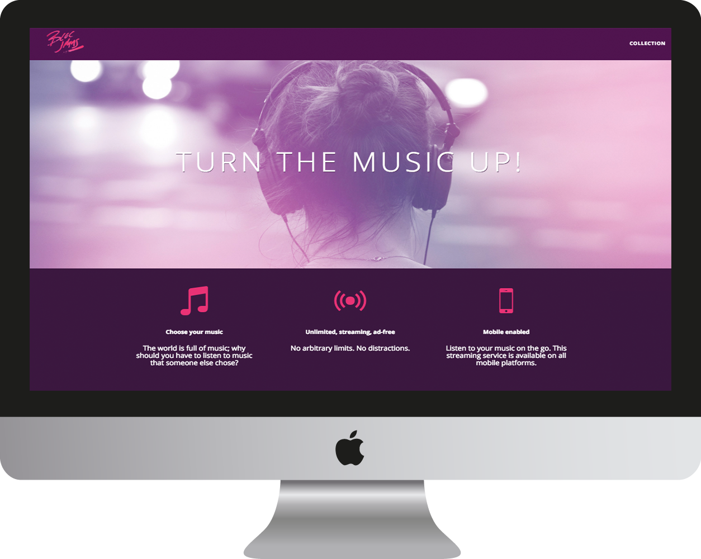
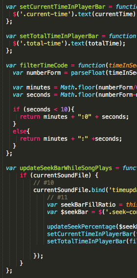

Mary Elizabeth Alemán
Web Developer
Bloc Jams
Summary
A replica website created to practice HTML, CSS and introduce Javascript and jQuery to those going through the web-development track of Bloc.
Explanation
Each page was set up through the assistance of Bloc and a new challenge was introduced at each section of the module.
Problem
A new concept and challenge were introduced each section. Some problems I had with the Bloc Jams website were the player bar not working playing properly from website to player bar. I also encountered a challenge going from one song to the other on the player bar as it would not work. Below is an example of my code.

Other issues included countdown of song playing not working properly. Below is the a part of the code.
Results
After looking over the code, most of my problems came from simple syntax details. I was able to learn how to create a website that was visually engaging and implement song performance through Javascript. I was also able to refracture Javascript with jQuery.
Conclusion
I learned how to create a website from start to finish using all four programming languages taught so far in the program. The website took a good amount of code and plays as well as I would hope it would during this stage of my learning development.
Check out Bloc Jams